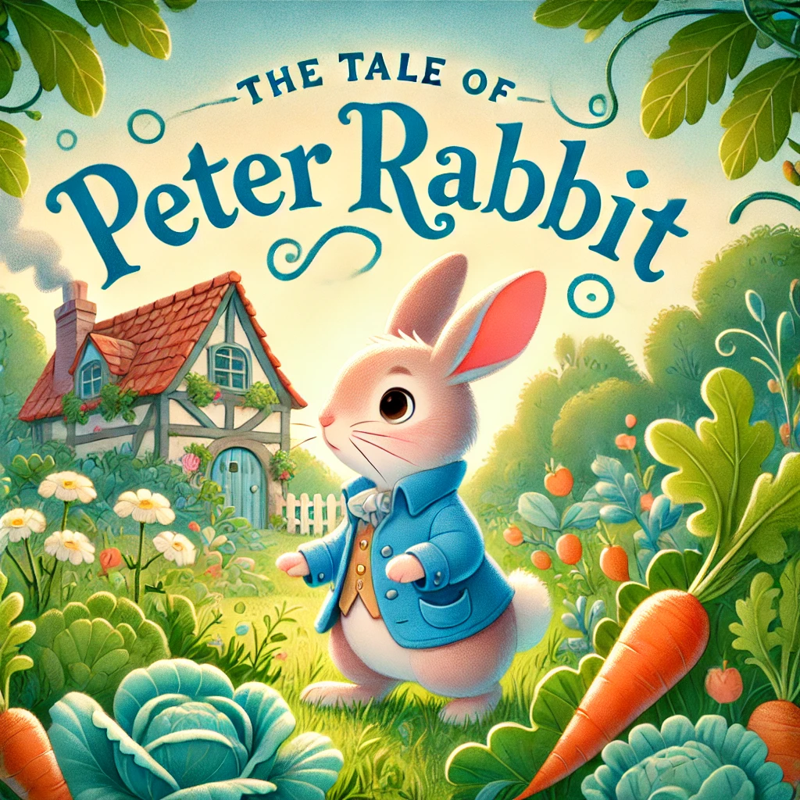

Classic Stories
A classic story is a narrative that has stood the test of time, remaining popular
and
influential across
generations. These stories are often known for their universal themes, memorable characters, and
moral
lessons. They resonate with readers of all ages because of their timeless appeal, relatable
messages,
and cultural significance. Classic stories are typically well-written, evoke strong emotions, and
are
passed down through oral traditions, books, and adaptations in various forms of media. Examples
include
fairy tales, myths, and legendary adventures
The Three Little Pigs

Once upon a time, there were Three little pigs who lived with their mother. One day, they
decided to leave
home and build houses of their own. Their mother warned them, "Whatever you do, do it the best you
can,
because that's the way to get along in the world see
more..
Little Red Riding Hood

Once upon a time, in a small village by the edge of a vast forest, lived a cheerful girl known as
Little Red Riding Hood. One day, her mother asked her to bring a basket of food to her sick
grandmother. “Stay on the path and don’t talk to strangers,” her mother warned.
Red Riding Hood set off through the forest, humming happily and admiring the wildflowers along the
way
See more..
Goldilocks and the Three Bears

Goldilocks, a curious little girl with golden curls, wanders through the forest and stumbles upon a
quaint cottage. Feeling tired and hungry, she peeks inside and finds the door slightly open. The
cozy room is filled with the smell of freshly made porridge. On the table, she sees three bowls: one
big, one medium, and one small. Tempted by the delicious aroma, she decides to taste each bowl. The
first is too hot, the second too cold, but the third is just right, and she eats it all up See more
The Tale of Peter Rabbit by Beatrix Potter

Once upon a time, there were four little rabbits – Flopsy, Mopsy, Cotton-tail, and Peter. Their
mother warned them never to go into Mr. McGregor's garden because their father had an accident
there. However, naughty Peter disobeyed and slipped under the gate into the garden. He was excited
by the delicious vegetables and began to eat lettuces, French beans, and radishes. But suddenly, Mr.
McGregor spotted him and chased after him, waving a rake and shouting, “Stop thief!” Peter was
terrified and ran around the garden, losing his shoes and jacket along the way. See more..
World Tales
World stories are tales, myths, legends, and folklore from different cultures and regions
around the globe. These narratives often reflect the values, beliefs, and traditions of the
societies from
which they originate. They explore universal themes like love, heroism, morality, creation, and the
battle between good and evil, but they are uniquely shaped by the cultural context of each region.
World stories weave together the rich tapestry of human experience, transporting readers to distant
lands and times. They often feature: Mythical Creatures and Gods: Characters like dragons,
spirits, deities, and legendary heroes.
Moral Lessons: Teaching values or ethics, often through parables or allegories.
Cultural Symbols and Traditions: Highlighting rituals, customs, and worldviews of different
societies Adventure and Magic: Filled with magical objects, enchanted places, and epic
quests.
These stories are passed down through generations, sometimes orally or in written form, preserving
the cultural heritage and wisdom of diverse civilizations. Examples include Greek mythology, African
folktales, Japanese ghost stories, Native American legends, and many more.
Whispers of the Ancient Winds

The Discovery: In a vast desert at sunset, a lone traveler stands before ancient ruins,
hearing
mysterious whispers carried by the wind. The Awakening: Inside the ruins, the traveler finds
a
glowing orb of light surrounded by ancient symbols. Reaching out, he awakens the power within,
echoing with ancient voices. The Restoration: The traveler watches as the orb ascends,
restoring the
ancient ruins to their former glory, and the whispers of the spirits echo in the golden, magical
wind.See more..
Legends Beyond the Horizon

The Journey Begins: A lone ship sails toward a mystical horizon, bathed in golden and purple
light, hinting at worlds beyond the known.
The Island of Myths: The ship approaches a mysterious island with ancient ruins shrouded in
mist, illuminated by enchanted fireflies.
The Portal Awakens: Amidst the ruins, a portal bursts to life, revealing celestial creatures
and the magic that guards the legendary land.
wind.See more..
Mysteries of the Seven Seas

Amidst stormy oceans, a cursed ghost ship sails eternally, crewed by lost souls seeking redemption.
Guided by cryptic carvings in ancient underwater ruins, they unravel the secret of an ancient curse
that binds them. As the curse is lifted under a full moon, the ship dissolves into the night sky,
freeing the sailors at last. A haunting tale of courage, hope, and the quest for forgiveness.
See more..
Myths of the Moonlit Valleys

Myths of the Moonlit Valleys follows a mystical journey through an ancient valley bathed in
moonlight. Hidden among towering mountains, the valley holds the ruins of a lost civilization and a
shimmering lake cloaked in ethereal mist. Venturing deeper, a hidden temple is discovered, guarded
by a glowing crystal believed to be the Heart of the Valley. When moonlight touches the crystal, an
ancient guardian spirit awakens, radiating divine wisdom and power. As the valley bows in reverence,
the guardian ensures that the secrets of this enchanted world remain preserved for eternity.
See more..
World for Educators
Educator stories are narratives that revolve around teachers, mentors, or anyone who
imparts knowledge and wisdom. These stories typically highlight the impact of education, the challenges
and triumphs of teaching, and the transformative power of learning. They often showcase the relationship
between educators and their students, emphasizing life lessons, moral values, and the importance of
curiosity and growth.
These stories can be:
- Inspirational – Showing how a teacher changes students' lives.
- Magical or Fantastical – Using imagination, like magical classrooms or talking
books, to make learning exciting.
- Emotional and Heartwarming – Focusing on personal connections, overcoming
challenges, or self-discovery.
- Humorous or Entertaining – Making education fun through light-hearted narratives.
The Magic Chalk

Ms. Elena was no ordinary teacher. One day, while cleaning the dusty old classroom, she stumbled
upon a
box of chalk with shimmering colors. When she drew a tree on the board, its branches stretched out,
and
leaves fluttered to the floor. She realized the chalk was magic!
From then on, Ms. Elena used it to make her lessons come alive. She drew dinosaurs that stomped and
roared, ancient pyramids that her students could explore, and stars that twinkled as they learned
about
the galaxy. But with great magic came great responsibility. One day, a mischievous student doodled a
dragon that leaped off the board, causing chaos. Together, they learned the importance of
creativity,
respect, and teamwork.
This story teaches about the wonders of imagination and how learning can be magical when curiosity
is
encouraged See more..
The Little Professor's Invention

Lila was no ordinary teacher—she was only twelve years old but already a genius inventor. When she
became the youngest teacher at her school, she built Robo-Teach, a robot that could transform into
anything needed for her lessons: a microscope, a globe, or even a musical instrument.
At first, the students loved Robo-Teach, but soon they began to rely on it too much, forgetting to
think
for themselves. Then one day, Robo-Teach malfunctioned and gave wrong answers. Lila realized that
technology is a tool, not a replacement for curiosity and learning. She fixed Robo-Teach, but she
also
encouraged her students to ask questions, make mistakes, and discover answers on their own.
This story illustrates the importance of critical thinking and the balance between technology and
human
creativity. See more..
The Traveling Classroom

Mr. Atlas had a secret—his classroom was actually a magical bus! With a twist of a globe on his
desk,
the classroom could travel anywhere in time and space. One moment, they’d be in ancient Egypt,
learning
about pharaohs; the next, they were in the future, seeing inventions yet to be made.
But the best journey was when they traveled inside the human body, learning about biology by walking
through veins and seeing cells up close. However, when they got lost, the students had to recall
everything they learned to find their way back.
This adventure-filled story teaches geography, history, science, and problem-solving while showing
that
the world is a classroom with endless lessons. See
more..
The Pencil That Teaches

Mrs. Willow had a very old pencil, passed down from her grandmother. Whenever she wrote with it, the
words glowed and danced on the paper, teaching lessons more profound than any textbook. One day, she
wrote a story about kindness, and the words floated into the air, forming pictures that showed her
students the impact of compassion.
But one afternoon, the pencil disappeared! Her students realized they had taken her lessons for
granted.
They searched everywhere, eventually finding it with a lonely student who had used it to write about
his
feelings. Touched by his story, they learned about empathy and the importance of understanding
others.
See more..